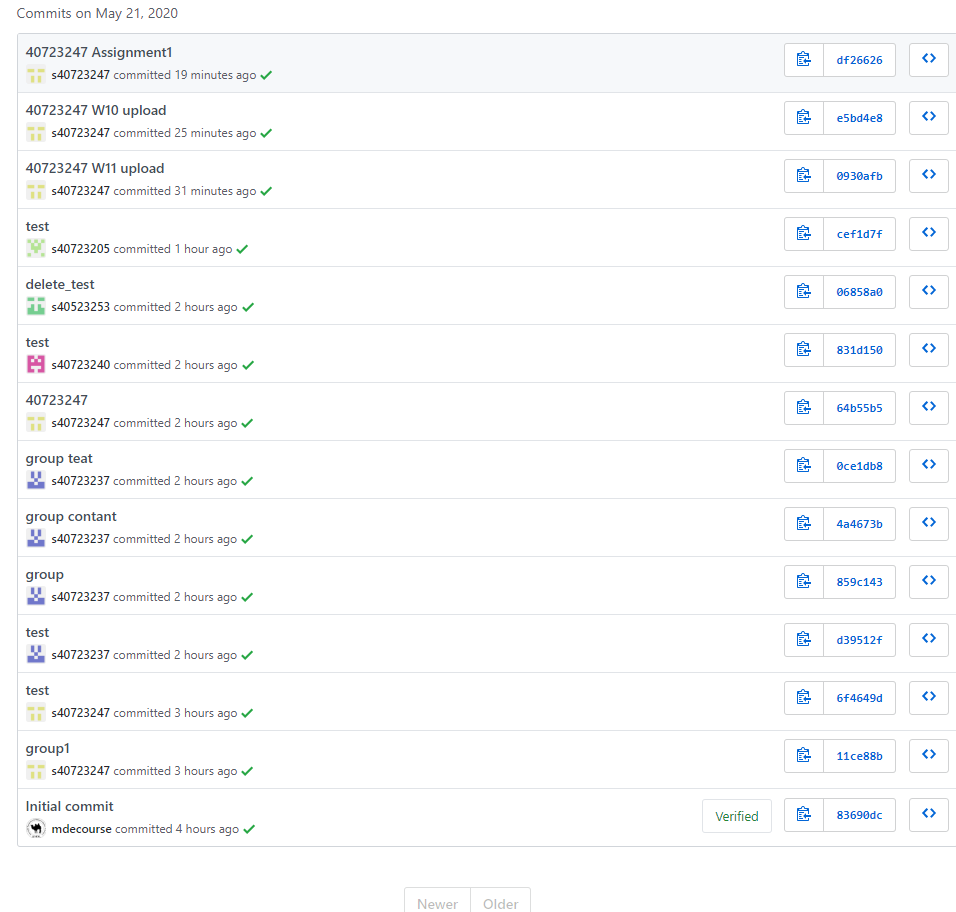
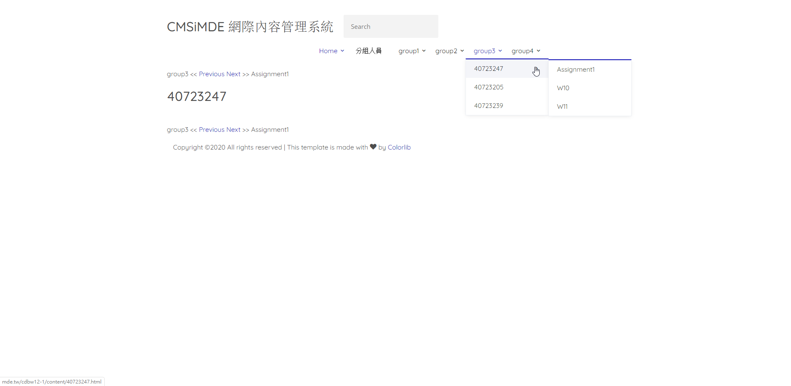
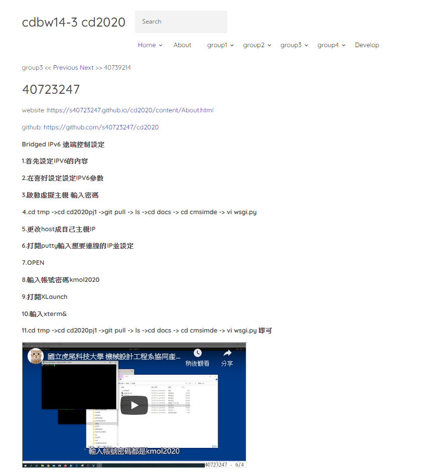

week6-9 <<
Previous Next >> week15-18
week10-14
week10
gm用戶登陸設定
- 先登入@gm帳號
- 至網站 https://console.developers.google.com
- 許可google API
- OAuth同意畫面按下同意
- 選擇內部用戶類型
- 建立憑證
- 在已授權的 JavaScript 來源，新增URL https://localhost 、https://localhost:8443
- 在已授權的重新導向 URI，新增URL https://localhost 、https://localhost:8443/login/google/
- 儲存帳號密碼到tmp內檔名改成自己的學號
- git clone 老師的CD2020PJ1克隆下來到tmp內
- 用LEO更改CD2020PJ1資料夾內的cd2020pj1.leo並儲存
- 打開wsgi.py就會自動導入畫面即完成
以下是我的練習影片
WEEK11
- 先下載事前資料
- 匯入ubuntu
- 設定虛擬主機的網路埠號
- 啟動ubuntu
- 輸入密碼kmol2020
- 輸入xterm&開啟
- 輸入ls查看內容
- cd coppeliasim4_rev4->ls->cd CoppeliaSim_Edu_v4_0_0_Ubuntu18_04->ls->./coppeliaSim.sh
- 打開檔案sdc.ttt
- 將檔案中的car_model.py放入編譯器執行
- 完成

老師隨機抽點每組各9個人，大家一起協同維護網站。
分組倉儲 : https://github.com/mdecourse/cdbw12-1
分組網站 : http://mde.tw/cdbw12-1/content/index.html
這個是我推在我們分組網站的與commit紀錄


WEEK12
IPv4 Ubuntu對外連線設定操作
1. 先開啟VirtualBox並用上次的cd2020pj1，喜好設定-->網路-->新增-->連接阜轉送
2. 主機IP打127.0.0.1，客體IP 10.0.2.15 主機連接阜分別為19999、22、17443、18443客體連接阜分別為19999、22、7443、8443
3.設定-->網路-->改成NAT網路
4.啟動虛擬主機
5.輸入密碼kmol2020，點選LXTerminal
6.輸入-->iconfig-->sudo apt net-tools -->輸入密碼kmol2020
7.打cd tmp -->ls -->輸入ping 127.0.0.1測試
8.進入cd2020pj1-->git pull-->sudo vi wsgi.py
9.把host的地方改成10.0.2.4 -->按ESC-->輸入wq儲存
10.開啟LEO-->打開cd2020pj1.leo-->點選NAV尋找allowExt
11.點fileuploadfrom，第10行新增一個ttt檔，完成後存儲並關閉leo
12.在tmp新增oauth_scrum.txt，打sudo vi oauth_scrum.txt
13.按i編輯，內容先都可以，接著按Esc並輸入:wq存儲
14.輸入python3 wsgi.py
15.帳號及密碼都為admin，點fileuploadform，選要上傳的ttt檔
16.點選download list檢查檔案是否上傳完成
Week13
Bridged IPv6 遠端控制設定
1.首先設定IPV6的內容
2.在喜好設定設定IPV6參數
3.啟動虛擬主機 輸入密碼
4.cd tmp ->cd cd2020pj1 ->git pull -> ls ->cd docs -> cd cmsimde -> vi wsgi.py
5.更改host成自己主機IP
6.打開putty輸入想要連線的IP並設定
7.OPEN
8.輸入帳號密碼kmol2020
9.打開XLaunch
10.輸入xterm&
11.cd tmp ->cd cd2020pj1 ->git pull -> ls ->cd docs -> cd cmsimde -> vi wsgi.py 即可
老師每組隨機抽3人 3個mini project 這週我沒有被抽到
mini project 1 :
http://mde.tw/cdbw13-1
https://github.com/mdecourse/cdbw13-1.git
mini project 2 :
http://mde.tw/cdbw13-2
https://github.com/mdecourse/cdbw13-2.git
mini project 3 :
http://mde.tw/cdaw14-3
https://github.com/mdecourse/cdaw14-3.git
Week14
老師每組隨機抽3人 3個mini project 我被抽到第三組
mini project 3 :
http://mde.tw/cdbw14-3
https://github.com/mdecourse/cdbw14-3.git
commit紀錄 : https://github.com/mdecourse/cdbw14-3/commits/master
網站截圖

week6-9 <<
Previous Next >> week15-18